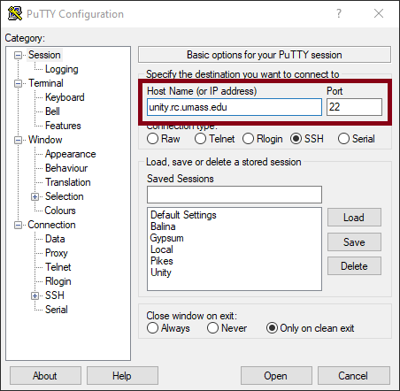
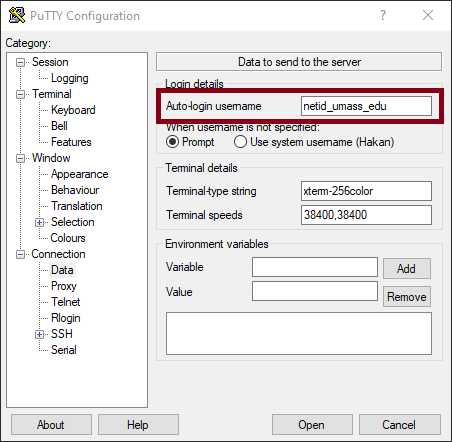
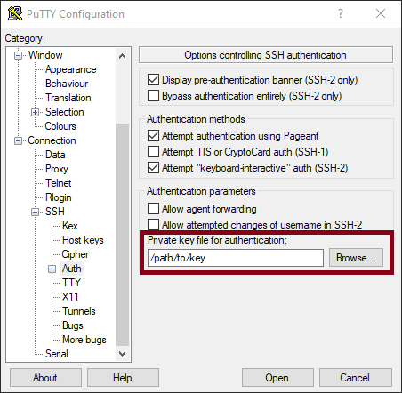
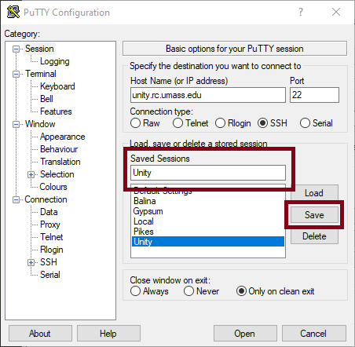

SSH Connection
The most traditional method of connecting to the cluster is using an SSH connection. A shell is what you type commands into. The most common shell in linux is bash, which is what you will be using on Unity. SSH stands for "secure shell".
Configure SSH Keys
The authentication method we use to allow users to connect to SSH is using SSH keys. You can read more about the public/private key exchange here.
For the purposes of this guide, you should know that there is a public key, which is stored on the server, and a private key, which you keep on your local computer. In very basic terms, you authenticate the public key with your private key and that allows you to login to the cluster.
You must save your SSH public key on the cluster by adding it in account settings. If you are unsure how to generate a public/private key pair. Simply click on generate key to add the public key. The private key will be downloaded.
Connection Details
If you know what to do with this information already, you can skip reading everything below that.
Address unity.rc.umass.edu
Username NETID_school_edu - View your username here
If you don't, we will explain how to set it up below.
Windows Users
Windows users can use PuTTY to connect to the cluster. Download and install PuTTY by following the link above. Be sure to select the 64 bit / 32 bit download depending on your system. Most are 64 bit, but if you are unsure 32 bit will always work.
Open PuTTY and enter hostname unity.rc.umass.edu on the main page

On the left sidebar, navigate to connection -> data, and enter your username.

On the left sidebar, navigate to connction -> ssh -> auth, and browse to your private key location.

Finally, in the main screen again, save the profile you created so you don't have to enter this information every time. Enter unity as the profile name and click save. You can then double click on unity under saved sessions to connect to the cluster right away.

Linux/Mac Users
Most distributions of linux come with the openssh client, which you can use to connect to the cluster.
If the file ~/.ssh/config doesn't exist, create it. Append the following contents:
Host unity
HostName unity.rc.umass.edu
User <NETID>_umass_edu
IdentityFile <PATH_TO_PRIVATE_KEY>
You can then connect to the cluster using the command ssh unity.